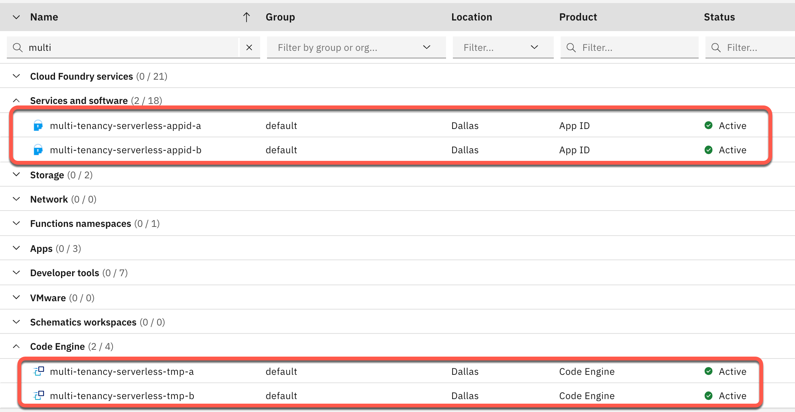
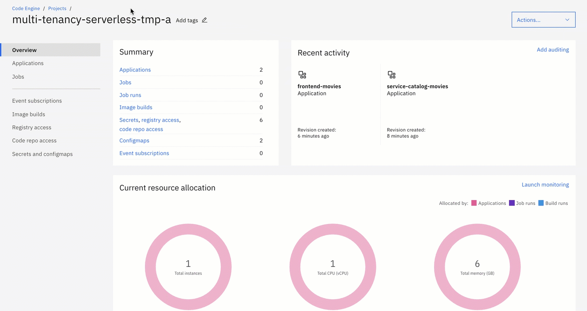
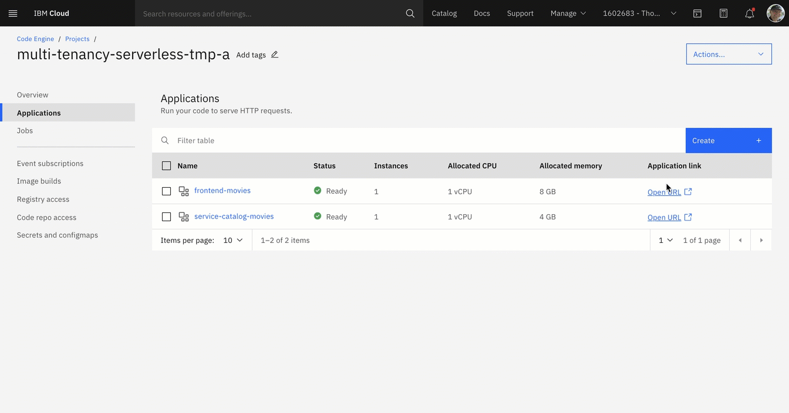

Lab 3: Setup e-commerce example application on IBM Cloud¶
------------------ UNDER CONSTRUCTION ------------------
Run automated first time installation setup¶
Don't forget you need an IBM Cloud PayAsYouGo Account! If you don't want to use the IBM Cloud Shell you need to install locally on your Mac:jq (
brew install jq), IBM Cloud CLI, IBM Code Engine CLI - plugin and IBM Cloud databases CLI - plugin and IBM Cloud Container Registry CLI - plugin.
Step 1: Clone the GitHub project to the IBM Cloud Shell¶
Insert these commands to clone the GitHub project to the IBM Cloud Shell.
git clone https://github.com/karimdeif/multi-tenancy.git
cd multi-tenancy
export ROOT_FOLDER=$(pwd)
Step 2: Inspect the default configuration of the setup bash scripts¶
Prerequiste to run the bash scripts (ce-create-two-tenantcies.sh and ce-install-application.sh for the setup:
- The container images for the applications need to be available.(in default uses Quay)
- Verify the default settings for the script execution.
The ce-create-two-tenantcies.sh script has following default parameters for Code Engine, Applications, container registry, AppID and Postgres.
- Code Engine
export PROJECT_NAME_A=multi-tenancy-serverless-a
export PROJECT_NAME_B=multi-tenancy-serverless-b
- Applications
export SERVICE_CATALOG_NAME_A="service-catalog-movies"
export FRONTEND_NAME_A="frontend-movies"
export SERVICE_CATALOG_NAME_B="service-catalog-fantasy"
export FRONTEND_NAME_B="frontend-fantasy"
export CATEGORY_A=Movies
export CATEGORY_B=Fantasy
- IBM CLoud container registry
export SERVICE_CATALOG_IMAGE="us.icr.io/multi-tenancy-cr/service-catalog:latest"
export FRONTEND_IMAGE="us.icr.io/multi-tenancy-cr/frontend:latest"
- App ID
export APPID_SERVICE_INSTANCE_NAME_A="multi-tenancy-serverless-appid-a"
export APPID_SERVICE_KEY_NAME_A="multi-tenancy-serverless-appid-key-a"
export APPID_SERVICE_INSTANCE_NAME_B="multi-tenancy-serverless-appid-b"
export APPID_SERVICE_KEY_NAME_B="multi-tenancy-serverless-appid-key-b"
- Postgres
export POSTGRES_SERVICE_INSTANCE_A=multi-tenant-pg-a
export POSTGRES_SERVICE_INSTANCE_B=multi-tenant-pg-b
Step 3: Execute following bash automation¶
Don't worry, this script may take several minutes (10 - 15 min) without portgres. With postgres it will take up to 30 mins.
- Execute following bash script:
cd $ROOT_FOLDER/installapp
bash ce-create-two-tenantcies.sh
- What happens behind the curtain?

The bash script ce-create-two-tenantcies.sh invokes twice the bash script ce-install-application.sh with the needed parameter to create two seperated tenant applications. Here is a short simplified description which steps are carried out currently in the script ce-install-application.sh:
- Configure IBM Cloud configuration for targets like $REGION and create an Code Engine CLI project
- Configure container the IBM Cloud container registry access in the Code Engine project
- Create Postgres instance and database
- Create an
App IDservice instance - Configure the AppID service instance and use the App ID REST API to configure: application, scope, roles, users, login, logo and color.
- Create
service catalogapplication in the Code Engine project - Create
frontendapplication in the Code Engine project - Add
redirect URIfor the Frontend to AppID - Verify Code Engine application deployments
- Show container logs of the applications
- Showing the URLs
After the exection of the script you find your IBM Cloud account:
- Two App ID service instances which do include an user with the username
thomas@example.comand passwordthomas4appid - Two Code Engine projects with a fontend and a backend application and an configured access for the IBM Cloud container registry of your account.
Note: We are using at the moment a preconfigured Postgres database running on IBM Cloud, which is maybe not in your cloud account.
Verify the setup¶
Step 1: Open following url https://cloud.ibm.com/resources¶
In resource list of the IBM Cloud UI, insert as filter for name the value multi. Now you should see following in your resource list:

Step 2: Open App ID instance for tenant a and inspect the configuration¶
Open following URL https://cloud.ibm.com/resources

Step 3: Open Code Engine project for tenant a and inspect the configuration¶
Step 4: Open the frontend application for tenant a in the Code Engine project¶

Step 5: Click on URL and logon to the frontend application using username thomas@example.com and password thomas4appid¶

Step 6: Repeat the all steps for tenant b¶
Optional Clean-up¶
Step 1: Inspect the default configuration of the clean-up bash scripts¶
Prerequiste to run the bash scripts (ce-clean-up-two-tenantcies.sh and ce-clean-up.sh for the clean-up. These are the default values:
- Code Engine
export PROJECT_NAME_A=multi-tenancy-serverless-tmp-a
export PROJECT_NAME_B=multi-tenancy-serverless-tmp-b
- Applications
export SERVICE_CATALOG_NAME_A="service-catalog-movies"
export FRONTEND_NAME_A="frontend-movies"
export SERVICE_CATALOG_NAME_B="service-catalog-fantasy"
export FRONTEND_NAME_B="frontend-fantasy"
- App ID
export APPID_SERVICE_INSTANCE_NAME_A="multi-tenancy-serverless-appid-a"
export APPID_SERVICE_KEY_NAME_A="multi-tenancy-serverless-appid-key-a"
export APPID_SERVICE_INSTANCE_NAME_B="multi-tenancy-serverless-appid-b"
export APPID_SERVICE_KEY_NAME_B="multi-tenancy-serverless-appid-key-b"
- Postgres
export POSTGRES_SERVICE_INSTANCE_A="multi-tenant-pg-a"
export POSTGRES_SERVICE_INSTANCE_B="multi-tenant-pg-b"
export POSTGRES_SERVICE_KEY_NAME_A="multi-tenant-pg-service-key-a"
export POSTGRES_SERVICE_KEY_NAME_B="multi-tenant-pg-service-key-b"
Step 2: Execute following bash automation in your IBM Cloud Shell¶
- Execute following bash script:
cd $ROOT_FOLDER/installapp
bash ce-clean-up-two-tenantcies.sh
Step 3: Verify the App ID services are delete¶
Open following URL https://cloud.ibm.com/resources
Step 4: Verify the Code Engine projects are delete¶
Open following URL https://cloud.ibm.com/codeengine/projects
Step 4: Verify the IBM CLoud API key is deleted¶
Open following URL https://cloud.ibm.com/iam/apikeys